Module: awful.tooltip
Tooltip module for awesome objects.
A tooltip is a small hint displayed when the mouse cursor
hovers over a specific item.
In awesome, a tooltip can be linked with almost any
object having a :connect_signal() method and receiving
mouse::enter and mouse::leave signals.
How to create a tooltip?
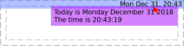
local mytextclock = wibox.widget.textclock() local myclock_t = awful.tooltip { objects = { mytextclock }, timer_function = function() return os.date("Today is %A %B %d %Y\nThe time is %T") end, }
Alternatively, you can use mouse::enter signal:
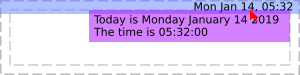
local mytextclock = wibox.widget.textclock() local myclock_t = awful.tooltip { } myclock_t:add_to_object(mytextclock) mytextclock:connect_signal("mouse::enter", function() myclock_t.text = os.date("Today is %A %B %d %Y\nThe time is %T") end)
How to create a tooltip without objects?
local tt = awful.tooltip { text = "A tooltip!", visible = true, } tt.bg = beautiful.bg_normal
How to add the same tooltip to multiple objects?
myclock_t:add_to_object(obj1) myclock_t:add_to_object(obj2)
Now the same tooltip is attached to myclock, obj1, obj2.
How to remove a tooltip from several objects?
myclock_t:remove_from_object(obj1) myclock_t:remove_from_object(obj2)
Now the same tooltip is only attached to myclock.
Class Hierarchy
- wibox
-
- awful.tooltip
Info:
- Copyright: 2009 Sébastien Gross
-
Originally authored by: Sébastien Gross <seb•ɱɩɲʋʃ•awesome•ɑƬ•chezwam•ɖɵʈ•org>
(Full contributors list available on our github project)
Constructors
| awful.tooltip {[args]} | Create a new tooltip and link it to a widget. | |
Object properties
| wibox | wibox | The wibox containing the tooltip widgets. | |
| visible | boolean | Is the tooltip visible? | |
| align | string | The horizontal alignment. | |
| shape | gears.shape | The shape of the tooltip window. | |
| mode | string | Set the tooltip positioning mode. | |
| preferred_positions | table |
The preferred positions when in outside mode.
|
|
| preferred_alignments | string |
The preferred alignment when using the outside mode.
|
|
| text | string | Change displayed text. | |
| markup | string | Change displayed markup. | |
| timeout | number | Change the tooltip's update interval. | |
| margins | number or table | Set all margins around the tooltip textbox. | |
| border_width | number | The border width. | |
| border_color | color | The border color. | |
| margins_leftright | number | Set the margins around the left and right of the tooltip textbox. | |
| margins_topbottom | number | Set the margins around the top and bottom of the tooltip textbox. | |
| gaps | number or table | Set the margins between the tooltip and its parent. | |
| ontop | boolean | On top of other windows. | Inherited from wibox |
| cursor | string | The mouse cursor. | Inherited from wibox |
| opacity | number | The opacity of the wibox, between 0 and 1. | Inherited from wibox |
| type | string | The window type (desktop, normal, dock, ...). | Inherited from wibox |
| x | integer | The x coordinates. | Inherited from wibox |
| y | integer | The y coordinates. | Inherited from wibox |
| width | width | The width of the wibox. | Inherited from wibox |
| height | height | The height of the wibox. | Inherited from wibox |
| screen | screen | The wibox screen. | Inherited from wibox |
| drawable | drawable | The wibox's drawable. | Inherited from wibox |
| widget | widget | The widget that the wibox displays. | Inherited from wibox |
| window | string | The X window id. | Inherited from wibox |
| shape_bounding | N/A | The wibox's bounding shape as a (native) cairo surface. | Inherited from wibox |
| shape_clip | N/A | The wibox's clip shape as a (native) cairo surface. | Inherited from wibox |
| shape_input | N/A | The wibox's input shape as a (native) cairo surface. | Inherited from wibox |
| input_passthrough | boolean | Forward the inputs to the client below the wibox. | Inherited from wibox |
| buttons | buttons_table | Get or set mouse buttons bindings to a wibox. | Inherited from wibox |
| bg | c | The background of the wibox. | Inherited from wibox |
| bgimage | gears.suface or string or function | The background image of the drawable. | Inherited from wibox |
| fg | color | The foreground (text) of the wibox. | Inherited from wibox |
Object methods
| :add_to_object (self, obj) | Add tooltip to an object. | |
| :remove_from_object (self, obj) | Remove tooltip from an object. | |
| :emit_signal (name, ...) | Emit a signal. | Inherited from gears.object |
| :connect_signal (name, func) | Connect to a signal. | Inherited from gears.object |
| :weak_connect_signal (name, func) | Connect to a signal weakly. | Inherited from gears.object |
| :geometry (A) -> () | Get or set wibox geometry. | Inherited from wibox |
| :struts (strut) -> () | Get or set wibox struts. | Inherited from wibox |
| :setup {[args]} | Set a declarative widget hierarchy description. | Inherited from wibox |
| :find_widgets (x, y) -> table | Find a widget by a point. | Inherited from wibox |
| :to_widget () -> widget | Create a widget that reflects the current state of this wibox. | Inherited from wibox |
| :save_to_svg (path[, context=nil]) |
Save a screenshot of the wibox to path.
|
Inherited from wibox |
| :draw (wibox) | Redraw a wibox. | Inherited from wibox |
Theme variables
| beautiful.tooltip_border_color | color | The tooltip border color. | |
| beautiful.tooltip_bg | color | The tooltip background color. | |
| beautiful.tooltip_fg | color | The tooltip foregound (text) color. | |
| beautiful.tooltip_font | string | The tooltip font. | |
| beautiful.tooltip_border_width | number | The tooltip border width. | |
| beautiful.tooltip_opacity | number | The tooltip opacity. | |
| beautiful.tooltip_gaps | table | The tooltip margins. | |
| beautiful.tooltip_shape | gears.shape | The default tooltip shape. | |
| beautiful.tooltip_align | string | The default tooltip alignment. | |
| beautiful.bg_normal | color | The default background color. | Inherited from wibox |
| beautiful.fg_normal | color | The default foreground (text) color. | Inherited from wibox |
Constructors
- awful.tooltip {[args]}
-
Create a new tooltip and link it to a widget.
Tooltips emit
property::visiblewhen their visibility changes.Parameters:
- args Arguments for tooltip creation.
- timer_function
function
A function to dynamically set the
tooltip text. Its return value will be passed to
wibox.widget.textbox.set_markup. - timeout
number
The timeout value for
timer_function. (default 1) - objects table A list of objects linked to the tooltip. (optional)
- delay_show number Delay showing the tooltip by this many seconds. (optional)
- margin_leftright integer The left/right margin for the text. (default apply_dpi(5))
- margin_topbottom integer The top/bottom margin for the text. (default apply_dpi(3))
- shape gears.shape The shape. (default nil)
- bg string The background color. (optional)
- fg string The foreground color. (optional)
- border_color string The tooltip border color. (optional)
- border_width number The tooltip border width. (optional)
- align string The horizontal alignment. (optional)
- font string The tooltip font. (optional)
- opacity number The tooltip opacity. (optional)
- gaps table or number The tooltip margins. (optional)
- timer_function
function
A function to dynamically set the
tooltip text. Its return value will be passed to
Returns:
-
awful.tooltip
The created tooltip.
See also:
- args Arguments for tooltip creation.
Object properties
- wibox wibox
- The wibox containing the tooltip widgets.
- visible boolean · 1 signal
-
Is the tooltip visible?
Click to display more Emit signals:
property::visibleWhen the visible value changes.selfawful.tooltip The object which changed (useful when connecting many object to the same callback).new_valuebooleanThe new value affected to the property.
- align string · 1 signal · 1 theme variable
-
The horizontal alignment.
This is valid for the mouse mode only. For the outside mode, use preferred_positions.
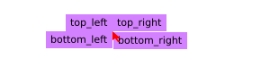
The following values are valid:
- top_left
- left
- bottom_left
- right
- top_right
- bottom_right
- bottom
- top
See also:
Click to display more Emit signals:
property::alignWhen the align value changes.selfawful.tooltip The object which changed (useful when connecting many object to the same callback).new_valuestring The new value affected to the property.
Consumed theme variables:
Theme variable Usage beautiful.tooltip_align Fallback when align isn't set. - shape gears.shape · 1 signal · 1 theme variable
-
The shape of the tooltip window.
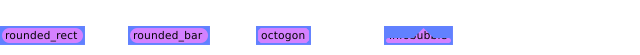
See also:
Click to display more Emit signals:
property::shapeWhen the shape value changes.selfawful.tooltip The object which changed (useful when connecting many object to the same callback).new_valueshape The new value affected to the property.
Consumed theme variables:
Theme variable Usage beautiful.tooltip_shape Fallback when shape isn't set. - mode string · 1 signal
-
Set the tooltip positioning mode. This affects how the tooltip is placed. By default, the tooltip is aligned close to the mouse cursor. It is also possible to place the tooltip relative to the widget geometry.
mouse:
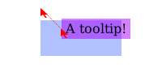
outside:
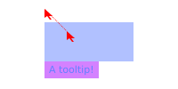
Valid modes are:
- "mouse": Next to the mouse cursor
- "outside": Outside of the widget
Click to display more Emit signals:
property::modeWhen the mode value changes.selfawful.tooltip The object which changed (useful when connecting many object to the same callback).new_valuestring The new value affected to the property.
- preferred_positions table · 1 signal
-
The preferred positions when in
outsidemode.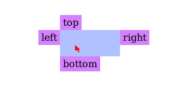
If the tooltip fits on multiple sides of the drawable, then this defines the priority.
The valid table values are:
- "top"
- "right"
- "left"
- "bottom"
The default is:
{"top", "right", "left", "bottom"}Type constraints:
- preferred_positions table The position, ordered by priorities
See also:
Click to display more Emit signals:
property::preferred_positionsWhen the preferred_positions value changes.selfawful.tooltip The object which changed (useful when connecting many object to the same callback).new_valuepreferred_positions The new value affected to the property.
- preferred_alignments string · 1 signal
-
The preferred alignment when using the
outsidemode.The values of the table are ordered by priority, the first one that fits will be used.
front:
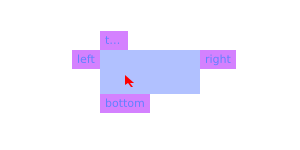
middle:
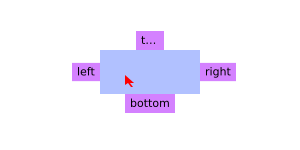
back:
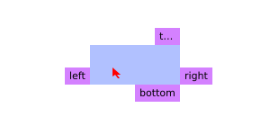
The valid table values are:
- front
- middle
- back
The default is:
{"front", "back", "middle"}See also:
Click to display more Emit signals:
property::preferred_alignmentsWhen the preferred_alignments value changes.selfawful.tooltip The object which changed (useful when connecting many object to the same callback).new_valuestring The new value affected to the property.
- text string · 1 signal
-
Change displayed text.
Type constraints:
- text
string
New tooltip text, passed to
wibox.widget.textbox.set_text.
See also:
Click to display more Emit signals:
property::textWhen the text value changes.selfawful.tooltip The object which changed (useful when connecting many object to the same callback).new_valuetext The new value affected to the property.
- text
string
New tooltip text, passed to
- markup string · 1 signal
-
Change displayed markup.
Type constraints:
- text
string
New tooltip markup, passed to
wibox.widget.textbox.set_markup.
See also:
Click to display more Emit signals:
property::markupWhen the markup value changes.selfawful.tooltip The object which changed (useful when connecting many object to the same callback).new_valuetext The new value affected to the property.
- text
string
New tooltip markup, passed to
- timeout number · 1 signal
-
Change the tooltip's update interval.
Type constraints:
- timeout number The timeout value.
Click to display more Emit signals:
property::timeoutWhen the timeout value changes.selfawful.tooltip The object which changed (useful when connecting many object to the same callback).new_valuetimeout The new value affected to the property.
- margins number or table · 1 signal
-
Set all margins around the tooltip textbox.
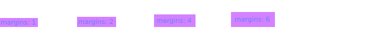
Type constraints:
- New number or table margins value.
Click to display more Emit signals:
property::marginsWhen the margins value changes.selfawful.tooltip The object which changed (useful when connecting many object to the same callback).new_valueNewThe new value affected to the property.
- border_width number · 1 signal · 1 theme variable
-
The border width.
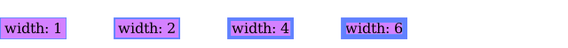
Click to display more Emit signals:
property::border_widthWhen the border_width value changes.selfawful.tooltip The object which changed (useful when connecting many object to the same callback).new_valuenumberThe new value affected to the property.
Consumed theme variables:
Theme variable Usage beautiful.tooltip_border_width Fallback when border_width isn't set. - border_color color · 1 signal
-
The border color.
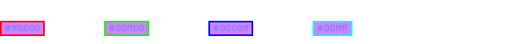
Click to display more Emit signals:
property::border_colorWhen the border_color value changes.selfawful.tooltip The object which changed (useful when connecting many object to the same callback).new_valuecolorThe new value affected to the property.
- margins_leftright number · 1 signal
-
Set the margins around the left and right of the tooltip textbox.
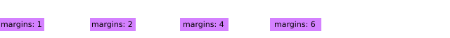
Type constraints:
- New number margins value.
Click to display more Emit signals:
property::margins_leftrightWhen the margins_leftright value changes.selfawful.tooltip The object which changed (useful when connecting many object to the same callback).new_valueNewThe new value affected to the property.
- margins_topbottom number · 1 signal
-
Set the margins around the top and bottom of the tooltip textbox.
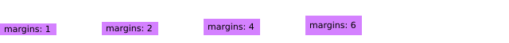
Type constraints:
- New number margins value.
Click to display more Emit signals:
property::margins_topbottomWhen the margins_topbottom value changes.selfawful.tooltip The object which changed (useful when connecting many object to the same callback).new_valueNewThe new value affected to the property.
- gaps number or table · 1 signal
-
Set the margins between the tooltip and its parent.
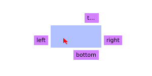
Type constraints:
- New number or table margins value.
Click to display more Emit signals:
property::gapsWhen the gaps value changes.selfawful.tooltip The object which changed (useful when connecting many object to the same callback).new_valueNewThe new value affected to the property.
- ontop boolean · Inherited from wibox · 1 signal
-
On top of other windows.
Click to display more Emit signals:
property::ontopWhen theontopvalue changes.selfwibox The object which changed (useful when connecting many object to the same callback).
- cursor string · Inherited from wibox · 1 signal
-
The mouse cursor.
See also:
Click to display more Emit signals:
property::cursorWhen thecursorvalue changes.selfwibox The object which changed (useful when connecting many object to the same callback).
- opacity number · Inherited from wibox · 1 signal
-
The opacity of the wibox, between 0 and 1.
Type constraints:
- opacity number (between 0 and 1)
Click to display more Emit signals:
property::opacityWhen theopacityvalue changes.selfwibox The object which changed (useful when connecting many object to the same callback).
- type string · Inherited from wibox · 1 signal
-
The window type (desktop, normal, dock, ...).
See also:
Click to display more Emit signals:
- x integer · Inherited from wibox · 1 signal
-
The x coordinates.
Click to display more Emit signals:
property::xWhen thexvalue changes.selfwibox The object which changed (useful when connecting many object to the same callback).
- y integer · Inherited from wibox · 1 signal
-
The y coordinates.
Click to display more Emit signals:
property::yWhen theyvalue changes.selfwibox The object which changed (useful when connecting many object to the same callback).
- width width · Inherited from wibox · 1 signal
-
The width of the wibox.
Click to display more Emit signals:
property::widthWhen thewidthvalue changes.selfwibox The object which changed (useful when connecting many object to the same callback).
- height height · Inherited from wibox · 1 signal
-
The height of the wibox.
Click to display more Emit signals:
property::heightWhen theheightvalue changes.selfwibox The object which changed (useful when connecting many object to the same callback).
- screen screen · Inherited from wibox · 1 signal
-
The wibox screen.
Click to display more Emit signals:
- drawable drawable · Inherited from wibox · 1 signal
-
The wibox's drawable.
Click to display more Emit signals:
- widget widget · Inherited from wibox · 1 signal
-
The widget that the wibox displays.
Click to display more Emit signals:
property::widgetWhen thewidgetvalue changes.selfwibox The object which changed (useful when connecting many object to the same callback).new_valuewidgetThe new value affected to the property.
- window string · Inherited from wibox · 1 signal
-
The X window id.
See also:
Click to display more Emit signals:
property::windowWhen thewindowvalue changes.selfwibox The object which changed (useful when connecting many object to the same callback).
- shape_bounding N/A · Inherited from wibox · 1 signal
-
The wibox's bounding shape as a (native) cairo surface.
If you want to set a shape, let say some rounded corners, use the shape property rather than this. If you want something very complex, for example, holes, then use this.
See also:
Click to display more Emit signals:
property::shape_boundingWhen theshape_boundingvalue changes.selfwibox The object which changed (useful when connecting many object to the same callback).
- shape_clip N/A · Inherited from wibox · 1 signal
-
The wibox's clip shape as a (native) cairo surface.
The clip shape is the shape of the window content rather than the outer window shape.
See also:
Click to display more Emit signals:
property::shape_clipWhen theshape_clipvalue changes.selfwibox The object which changed (useful when connecting many object to the same callback).
- shape_input N/A · Inherited from wibox · 1 signal
-
The wibox's input shape as a (native) cairo surface.
The input shape allows to disable clicks and mouse events on part of the window. This is how
input_passthroughis implemented.See also:
Click to display more Emit signals:
property::shape_inputWhen theshape_inputvalue changes.selfwibox The object which changed (useful when connecting many object to the same callback).
- input_passthrough boolean · Inherited from wibox · 1 signal
-
Forward the inputs to the client below the wibox.
This replace the
shape_inputmask with an empty area. All mouse and keyboard events are sent to the object (such as a client) positioned below this wibox. When used alongside compositing, it allows, for example, to have a subtle transparent wibox on top a fullscreen client to display important data such as a low battery warning.See also:
Click to display more Emit signals:
property::input_passthroughWhen theinput_passthroughvalue changes.selfwibox The object which changed (useful when connecting many object to the same callback).new_valuebooleanThe new value affected to the property.
- buttons buttons_table · Inherited from wibox · 1 signal
-
Get or set mouse buttons bindings to a wibox.
Type constraints:
- buttons_table A table of buttons objects, or nothing.
Click to display more Emit signals:
property::buttonsWhen thebuttonsvalue changes.selfwibox The object which changed (useful when connecting many object to the same callback).
- bg c · Inherited from wibox · 1 signal · 1 theme variable
-
The background of the wibox.
The background color can be transparent. If there is a compositing manager such as compton, then it will be real transparency and may include blur (provided by the compositor). When there is no compositor, it will take a picture of the wallpaper and blend it.
Type constraints:
- The c background to use. This must either be a cairo pattern object, nil or a string that gears.color() understands.
See also:
Click to display more Emit signals:
property::bgWhen thebgvalue changes.selfwibox The object which changed (useful when connecting many object to the same callback).new_valueTheThe new value affected to the property.
Consumed theme variables:
Theme variable Usage beautiful.bg_normalThe default (fallback) bg color. - bgimage gears.suface or string or function · Inherited from wibox · 1 signal
-
The background image of the drawable.
If
imageis a function, it will be called with(context, cr, width, height)as arguments. Any other arguments passed to this method will be appended.Type constraints:
- image gears.suface, string or function A background image or a function.
See also:
Click to display more Emit signals:
property::bgimageWhen thebgimagevalue changes.selfwibox The object which changed (useful when connecting many object to the same callback).new_valueimageThe new value affected to the property.
- fg color · Inherited from wibox · 1 signal · 1 theme variable
-
The foreground (text) of the wibox.
Type constraints:
- c color The foreground to use. This must either be a cairo pattern object, nil or a string that gears.color() understands.
- color
See also:
Click to display more Emit signals:
property::fgWhen thefgvalue changes.selfwibox The object which changed (useful when connecting many object to the same callback).new_valuecThe new value affected to the property.
Consumed theme variables:
Theme variable Usage beautiful.fg_normalThe default (fallback) fg color.
Object methods
- :add_to_object (self, obj)
-
Add tooltip to an object.
Parameters:
- self tooltip The tooltip.
- obj
gears.object
An object with
mouse::enterandmouse::leavesignals.
- :remove_from_object (self, obj)
-
Remove tooltip from an object.
Parameters:
- self tooltip The tooltip.
- obj
gears.object
An object with
mouse::enterandmouse::leavesignals.
- :emit_signal (name, ...) · Inherited from gears.object
-
Emit a signal.
Parameters:
- name string The name of the signal.
- ... Extra arguments for the callback functions. Each connected function receives the object as first argument and then any extra arguments that are given to emit_signal().
- :connect_signal (name, func) · Inherited from gears.object
-
Connect to a signal.
Parameters:
- name string The name of the signal.
- func function The callback to call when the signal is emitted.
- :weak_connect_signal (name, func) · Inherited from gears.object
-
Connect to a signal weakly.
This allows the callback function to be garbage collected and automatically disconnects the signal when that happens.
Warning: Only use this function if you really, really, really know what you are doing.
Parameters:
- name string The name of the signal.
- func function The callback to call when the signal is emitted.
- :geometry (A) -> () · Inherited from wibox · 1 signal
-
Get or set wibox geometry. That's the same as accessing or setting the x,
y, width or height properties of a wibox.
Parameters:
- A table with coordinates to modify.
Returns:
-
A table with wibox coordinates and geometry.
Click to display more Emit signals:
property::geometryWhen the geometry change.geotable The geometry table.
- :struts (strut) -> () · Inherited from wibox · 1 signal
-
Get or set wibox struts.
Struts are the area which should be reserved on each side of the screen for this wibox. This is used to make bars and docked displays. Note that awful.wibar implements all the required boilerplate code to make bar. Only use this if you want special type of bars (like bars not fully attached to the side of the screen).
Parameters:
- strut A table with new strut, or nothing
Returns:
-
The wibox strut in a table.
See also:
Click to display more Emit signals:
property::struts
- :setup {[args]} · Inherited from wibox
-
Set a declarative widget hierarchy description.
See The declarative layout system
Parameters:
- args An array containing the widgets disposition
- :find_widgets (x, y) -> table · Inherited from wibox
-
Find a widget by a point.
The wibox must have drawn itself at least once for this to work.
Parameters:
- x number X coordinate of the point
- y number Y coordinate of the point
Returns:
-
table
A sorted table of widgets positions. The first element is the biggest
container while the last is the topmost widget. The table contains x, y,
width, height and widget.
- :to_widget () -> widget · Inherited from wibox
-
Create a widget that reflects the current state of this wibox.
Returns:
-
widget
A new widget.
- :save_to_svg (path[, context=nil]) · Inherited from wibox
-
Save a screenshot of the wibox to
path.Parameters:
- :draw (wibox) · Inherited from wibox
-
Redraw a wibox. You should never have to call this explicitely because it is
automatically called when needed.
Parameters:
- wibox
Theme variables
- beautiful.tooltip_border_color color
- The tooltip border color.
- beautiful.tooltip_bg color
- The tooltip background color.
- beautiful.tooltip_fg color
- The tooltip foregound (text) color.
- beautiful.tooltip_font string
- The tooltip font.
- beautiful.tooltip_border_width number
- The tooltip border width.
- beautiful.tooltip_opacity number
-
The tooltip opacity.
Type constraints:
- number opacity Between 0 and 1
- beautiful.tooltip_gaps table
- The tooltip margins.
- beautiful.tooltip_shape gears.shape
-
The default tooltip shape.
The default shape for all tooltips is a rectangle. However, by setting
this variable they can default to rounded rectangle or stretched octagons.
Type constraints:
- shape gears.shape A gears.shape compatible function (default gears.shape.rectangle)
See also:
- beautiful.tooltip_align string
-
The default tooltip alignment.
See also:
- beautiful.bg_normal color · Inherited from wibox
-
The default background color.
The background color can be transparent. If there is a compositing manager such as compton, then it will be real transparency and may include blur (provided by the compositor). When there is no compositor, it will take a picture of the wallpaper and blend it.
See also:
- beautiful.fg_normal color · Inherited from wibox
-
The default foreground (text) color.
See also: